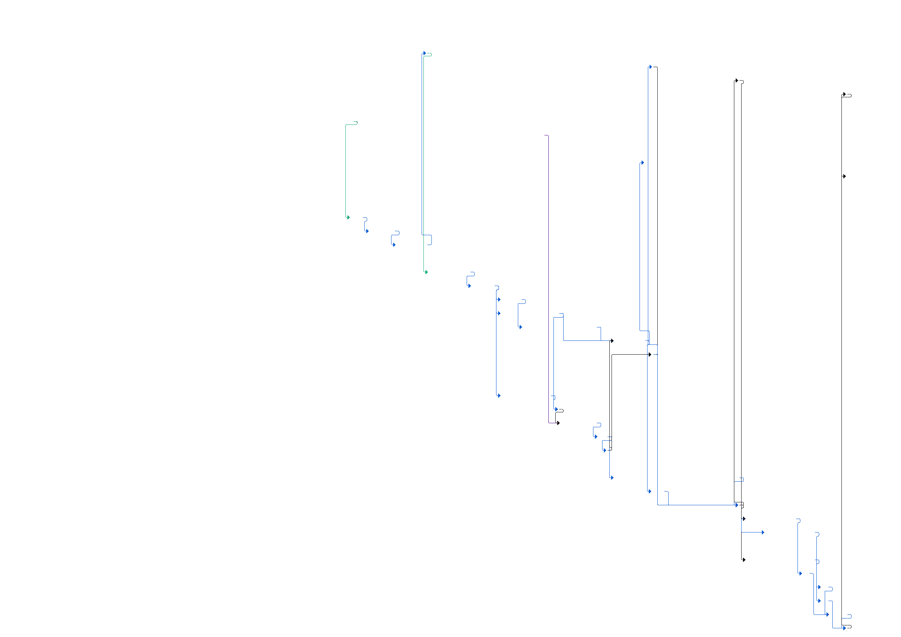
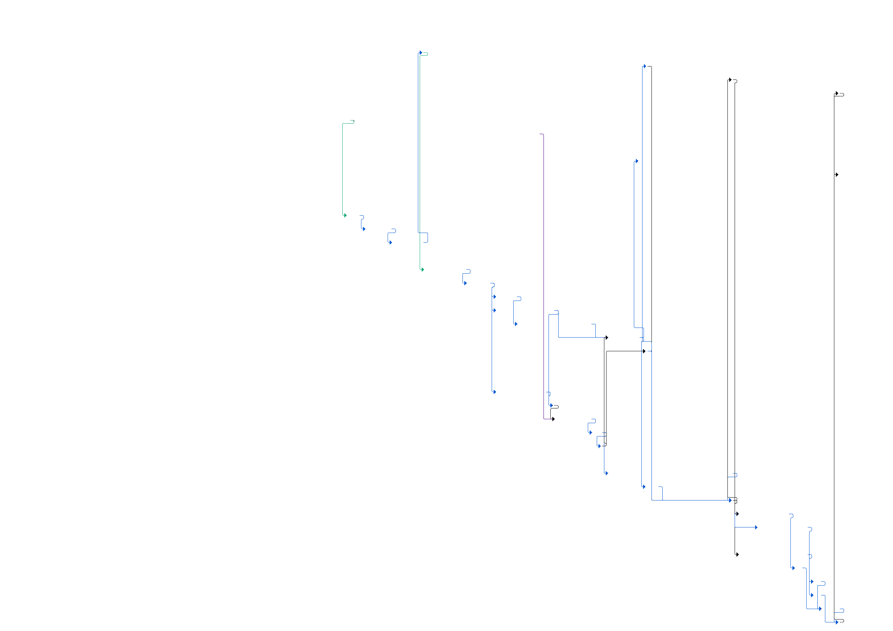

Data Date
The Data Date is the latest update date. It differs from the current date.
1
WBS & Unique ID
The WBS is clearly defined and follows the project's structure. Every Activity has a unique identifier.
2
Activity Name
The Activity Name should be clear to prevent any confusion: the deliverable associated with the activity should be understandable without reference to the rest of the schedule.
3
Duration
The Duration of each activity must not exceed 2 months for detailed schedules.
4
Physical Progress
Physical Progress is determined by measurable metrics and represents the ratio of actual work completed to the planned work, distinct from time progress.
5
Main Milestones
Usually, the Main Milestones of the project are grouped at the beginning of the schedule.
6
Start Milestone
The Start Milestone clearly defines the start of the project.
7
Finish Milestone
The Finish Milestone clearly defines the end of the project.
8
Interfaces: Inputs
Interfaces Inputs gather all information needed to perform the work. The content and delivery date must be agreed upon.
9
Interfaces: Outputs
Interfaces Outputs gather all information needed to be delivered by the project. The content and delivery date must be agreed upon.
10
Actuals
All activities in the past must be Actuals. No remaining work in the past.
11
Planned Activities
Planned Activities represent the activities after the data date. No actuals must be recorded in the future.
12
Critical Path
The Critical Path is the longest path of the project: any delay on the Critical Path will directly impact the end.
13
Constraints
Constraints must be used only for showing important dates that must be achieved (in this case the SOP and the End of FPQ)
★
No Baseline?
You can notice this activity has no baseline, it has been added to reflect the split of 3D models and drawings.
★
Strange Progress!
The discrepancy between the 20% Physical Progress and the ratio of time spent to time remaining (~ 80%) illustrates the difference between Physical Progress and time progress.